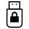
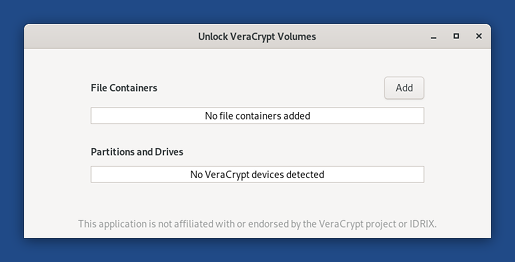
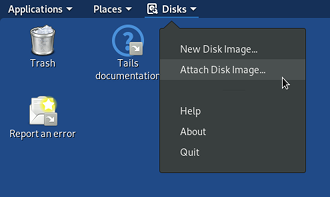
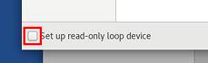
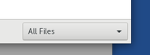
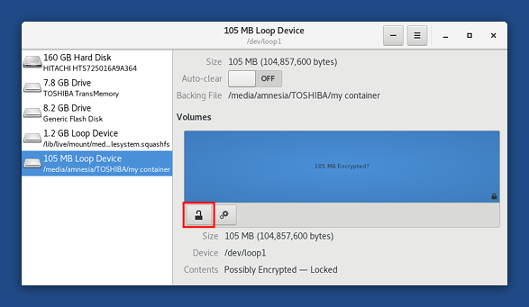
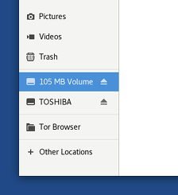
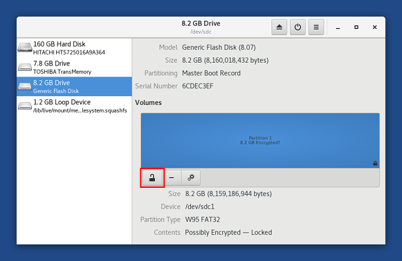
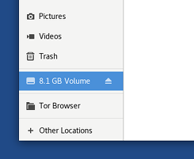

A file container is a single big file inside which you can store several files encrypted, a bit like a ZIP file.
Introduction to VeraCrypt
VeraCrypt is a disk encryption tool that works on Windows, macOS, and Linux.
Comparison between LUKS and VeraCrypt
You can also create and open LUKS encrypted volumes in Tails. LUKS is the standard for disk encryption in Linux. See our documentation about LUKS.
We recommend you use:
- VeraCrypt to share encrypted files across different operating systems.
- LUKS to encrypt files for Tails and Linux.
| LUKS | VeraCrypt | |
|---|---|---|
| Compatibility | Linux | Windows + macOS + Linux |
| Create new volumes | Yes | Outside of Tails |
| Open and modify existing volumes | Yes | Yes |
| Encrypted partitions (or entire disks) ¹ | Yes | Yes |
| Encrypted file containers ¹ | Complicated ² | Easy |
| Plausible deniability ³ | No | Yes |
| Ease of use | Easier | More complicated |
| Speed | Faster | Slower |
See Tyler Burton: How to migrate from TrueCrypt to LUKS file containers.
Plausible deniability: in some cases (for example, with VeraCrypt hidden volumes), it is impossible for an adversary to technically prove the existence of an encrypted volume.
Still, deniable encryption might not protect you if you are forced to reveal the existence of the encrypted volume. See:
To create new VeraCrypt volumes, do so outside of Tails. See the step-by-step guides by Security-in-a-Box:
Difference between file containers and partitions
With VeraCrypt you can store your files encrypted in two different kinds of volumes:
File containers
Partitions or drives

Usually, drives (USB sticks and hard disks) have a single partition of their entire size. This way, you can encrypt a whole USB stick, for example. But, drives can also be split into several partitions.
Unlocking parameters
To unlock a VeraCrypt volume, you might need the following parameters, depending on the options that were selected when the volume was created:
Passphrase
Due to an issue in cryptsetup, it is currently impossible to open VeraCrypt volumes with a passphrase of more than 64 characters. (#17474)
Keyfiles: instead of or in addition to the passphrase, a VeraCrypt volume can be unlocked using a particular file or set of files.
PIM: a number that is needed if it was specified when creating the VeraCrypt volume.
Hidden volume: if you want to unlock the hidden volume inside the VeraCrypt volume.
System volume: if you want to unlock an encrypted Windows system partition.
See the VeraCrypt documentation on encrypting a Windows system partition.
Using a file container
Unlocking a file container without keyfiles
Choose .

Click Add and choose the file container that you want to unlock.
Enter the parameters to unlock the volume. For more information, see the Unlocking parameters section above.
Click Unlock.
Unlock VeraCrypt Volumes unlocks your volume.
If unlocking the volume fails (for example, if you mistyped the password), click on Unlock to try unlocking again.
Click Open to open the volume in the Files browser.
Unlocking a file container with keyfiles
Choose to start the Disks utility.
Choose from the top navigation bar.

In the Select Disk Image to Attach dialog:
Unselect the Set up read-only loop device check box in the bottom-left corner if you want to modify the content of the file container.

Choose All Files in the file filter in the bottom-right corner.

Navigate to the folder containing the file container that you want to open.
Select the file container and click Attach.
In the left pane, select the new Loop Device that corresponds to your file container.
In the right pane, it should have an Encrypted? label.

Click the button in the right pane.
Enter the parameters to unlock the volume. For more information, see the Unlocking parameters section above.
Click Unlock.
Select the file system that appears below the unlocked volume. It probably has a FAT or NTFS content.
Click the button to mount the volume.
Click on the /media/amnesia/ link in the right pane to open the volume in the Files browser.
Closing a file container
You can either:
In the sidebar of the Files browser, click on the button on the label of the volume corresponding to your file container.

In Unlock VeraCrypt Volumes, click on the button in the line that corresponds to your file container.
Using a partition or drive
Unlocking a partition or drive without keyfiles
If your partition or drive is on an internal hard disk, set up an administration password when starting Tails.
Otherwise, plug in the USB stick or the hard disk that you want to unlock.
Choose .
In the list of partitions, click Unlock in the line that corresponds to your USB stick or hard disk.

Enter the parameters to unlock the volume. For more information, see the Unlocking parameters section above.
Click Unlock.
Click Open to open the volume in the Files browser.
Unlocking a partition or drive with keyfiles
If your partition or drive is on an internal hard disk, set up an administration password when starting Tails.
Otherwise, plug in the USB stick or the hard disk that you want to unlock.
Choose to start the Disks utility.
In the left pane, select the drive that corresponds to your USB stick or hard disk.

In the right pane, select the partition that corresponds to your VeraCrypt volume.
It should have an Encrypted? label.
Click the button in the right pane.
Enter the parameters to unlock the volume. For more information, see the Unlocking parameters section above.
Click Unlock.
Select the file system that appears below the unlocked volume. It probably has a FAT or NTFS content.
Click the button to mount the volume.
Click on the /media/amnesia/ link in the right pane to open the volume in the Files browser.
Closing a partition or drive
You can either:
In the sidebar of the Files browser, click on the button on the label of the volume corresponding to your partition.

In Unlock VeraCrypt Volumes, click on the button in the line that corresponds to your USB stick or hard disk.